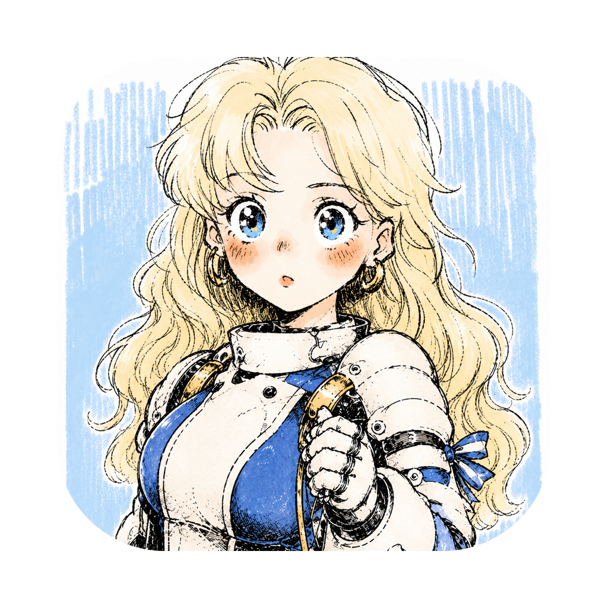
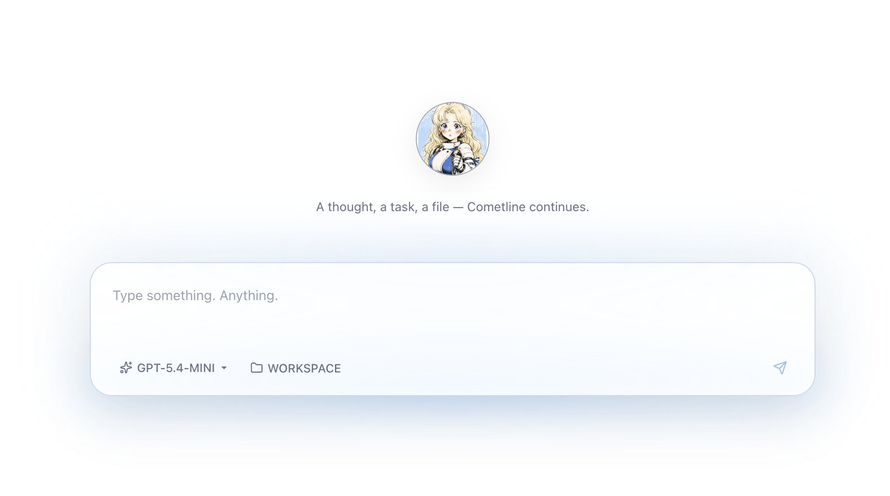
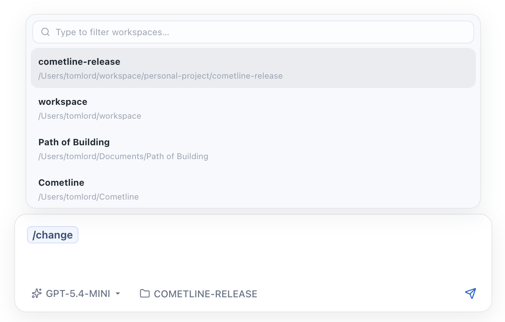
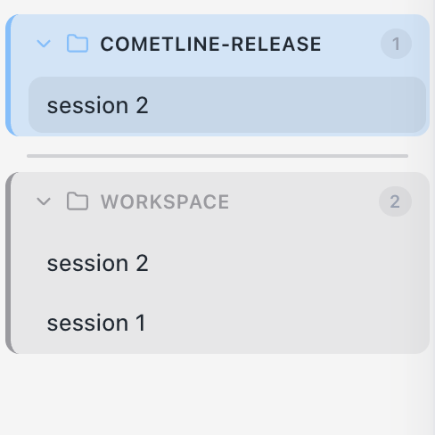

Default
Quiet confidence
Soft gradients, warm paper tones, and a composed assistant presence for focused engineering work.

Cometline Get the DMGLocal-first desktop AI
Cometline combines a warm, cinematic desktop surface with a serious local runtime: streaming reasoning, visible tools, durable memory, and workspace-aware sessions for long-form technical work.
Loading latest release...
Not a disposable web tab. A desktop instrument for developers who want atmosphere, clarity, and control in the same place.
Personas
Cometline can present different character styles while keeping the experience elegant and cohesive. The app icons already hint at that flexibility.
Default
Soft gradients, warm paper tones, and a composed assistant presence for focused engineering work.
Alternative
The assistant can feel more personal or more theatrical while the system remains grounded in the same runtime and interface model.
Features
The interface stays airy and readable while exposing the things that matter when you are doing serious work with an agent.
Elegant composer
The composer feels soft and editorial, but it is still built for slash commands, tools, and long-running technical conversations.

Forking sessions
Branch a conversation into a different direction when you want to compare ideas, try another model, or split implementation paths.

Grouped by workspace
Sessions are organized around the codebase you are actually working in, so the assistant remains grounded instead of floating free.

Workflow
The desktop shell handles the atmosphere, UI, settings, and native feel.
The local runtime manages sessions, tools, persistence, memory, and streaming.
The provider layer normalizes model I/O and keeps vendor integrations coherent.
Cometline treats AI like software craft: something you inhabit, shape, and trust over time.
Download
The download buttons resolve to the newest DMG published on GitHub Releases, with a graceful fallback to the releases page if the API is unavailable.